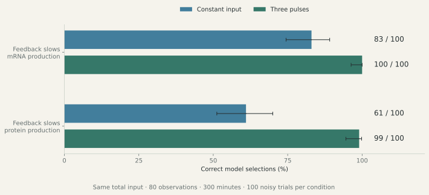
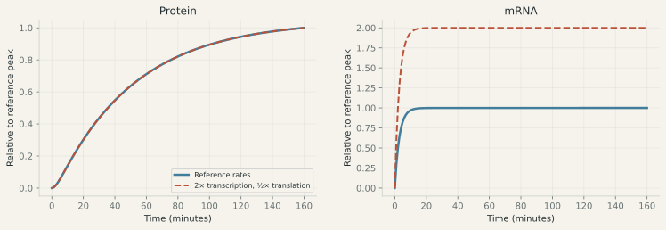

01 · Mechanistic model inference
In simulations of two feedback mechanisms, three pulses made the mechanisms easier to distinguish than constant input. Both schedules used the same total input and the same number of protein measurements.
Cells make mRNA, then use it to make protein. Feedback can slow either step. Ryzowicz & Yildirim (2023) compare how these mechanisms affect protein dynamics. When both models can adjust their rates to fit the data, which input makes the correct mechanism easier to identify?
| True feedback mechanism | Constant input | Three pulses |
|---|---|---|
| Slows mRNA production | 83 / 100 | 100 / 100 |
| Slows protein production | 61 / 100 | 99 / 100 |
Correct model selections in 100 noisy simulations per condition. Every experiment lasts 300 minutes and observes protein 80 times. Both candidate models refit four parameters. The pulse schedule alternates twice the reference input with zero input every 50 minutes, preserving the total input of the constant schedule.

Eliminating the unobserved mRNA state produces an equation for protein alone. Translational feedback contributes an extra term that depends on how fast the protein level is changing. That term vanishes at equilibrium. Repeated rises and falls make the difference between the mechanisms more visible.
A screen compared five equal-input schedules across both mechanisms and three feedback strengths. Three pulses gave the largest worst-case separation within that menu. Repeated trials with added noise then tested how often the correct model was selected. This applies the established idea of designing experiments to discriminate between biochemical models to this model family.
An additional pulse comparison keeps basal transcription active. At the higher of two feedback strengths, three pulses yielded just three additional correct selections in 50 trials for each mechanism (47 to 50 and 41 to 44). Full counts and settings.
Even if the feedback mechanism is known, two different sets of production rates can give exactly the same protein curve. The example below simulates gene expression without feedback. Move the slider to multiply the transcription rate and divide the translation rate by the same factor.

The protein curves coincide. Doubling transcription and halving translation doubles the mRNA concentration.
Each vertical axis uses that molecule’s peak concentration at the reference rates as one unit. Both simulations start at zero and use the same decay rates.
The same trade-off holds under any prescribed transcription input in both feedback models. A measurement of mRNA during the response could distinguish rate settings that protein alone cannot separate.